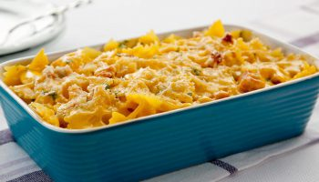
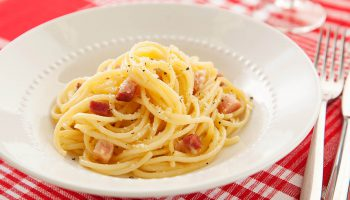
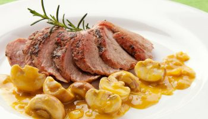
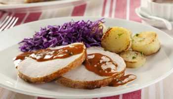

Massas
.jpg)
Farfalle com manjericão e nozes
Uma combinação deliciosa de farfalle, manjericão fresco e nozes crocantes.
Ver receita

Macarrão gratinado com cheddar e bacon
Macarrão cremoso coberto com queijo cheddar derretido e crocantes pedaços de bacon.
Ver receita

Espaguete à Carbonara
Macarrão cremoso com molho à base de ovos, queijo parmesão e pancetta.
Ver receitaDoces
Bolo de laranja
Delicioso bolo com um toque cítrico de laranja, perfeito para qualquer ocasião.
Ver receitaSuflê de chocolate
Um suflê cremoso e quente, servido com uma calda de chocolate irresistível.
Ver receitaCarnes

Filet mignon suíno com champignons e creme de mostarda
Delicioso filet mignon suíno, acompanhado de champignons frescos e um cremoso molho de mostarda.
Ver receita

Filet suíno ao molho de maracujá, laranja e mel
Filet suíno preparado com um molho agridoce de maracujá, laranja e mel.
Ver receitaHamburguinho com molho de queijo
Pequenos hambúrgueres acompanhados de um delicioso molho de queijo derretido.
Ver receita